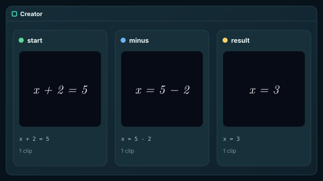

Components
Every component a page can use, live, with the markup that makes it. Copy the markup; AUTHORING.md says what each attribute does.
Prose
A page is an article.doc with one h1; every h2 and
h3 has an id (the contents of the page and the links to a section
use it). The first paragraph can be a p.lead. Links between pages are relative
(../basics/timeline.html#tracks), and a prose link carries no class.
Write each formula in LaTeX in the Creator: a
formula is one object, however many clips show it. See
Clips, and the source
\frac{a}{b}.
- A list item.
- Another one, with emphasis.
- A numbered step.
- The next one.
Interface labels and keys
The app's own labels are quoted exactly as the app shows them, in a
span.ui; a menu path uses ▸. A key combination is a kbd with
data-keys: Mod is Ctrl, or ⌘ on a Mac; Alt is ⌥ and
Shift is ⇧ there, in the order a Mac's menus write them (⇧⌘Z). The text inside
is what a reader without JavaScript sees. A shortcut that has other keys on a Mac names
them in data-keys-mac, and a few words for one system alone go in a
span.only-mac or a span.not-mac.
Choose File ▸ Open… or press Ctrl+O. Undo with Ctrl+Z, redo with Ctrl+Shift+Z. With clips selected in the Preview, Alt+A aligns them to the left; ← and → step one frame.
File ▸ Save As… is Ctrl+Alt+S, and the menu of what has the focus opens with Shift+F10 or the Menu key (with Fn, on a laptop).
Callouts
Four kinds: tip, note, warning and
platform (with data-platform: mac,
windows or linux). site.js adds the label; a platform callout of
the reader's own system says so.
Try it
A short exercise, as an ordered list in an aside.try.
Code
A pre with a code of class language-python,
language-latex, language-json, language-bash,
language-html or language-js is highlighted, and every
pre of a page gets a copy button. Escape < and
& inside.
class Pinned(Scene):
def construct(self):
a1 = MathTex(r"mx+y=0")
a1[0][2].set_color("#FFFF00") # the y
self.play(Write(a1), run_time=1)x = \frac{-b \pm \sqrt{b^2 - 4ac}}{2a} % the quadratic formula{ "format": "manim-formula-editor", "version": 34, "meta": { "fps": 60 } }cd app
npm run dev # the app's dev serverTables
A plain table with a thead; a wide one scrolls on its own. A
cell of keys that must stay on one line is a td.keys. A page of wide tables
(the reference of menus, keys and preferences) marks its article
article.doc.wide-tables: its tables keep 36rem at least and scroll sideways on
a phone instead of squeezing their columns.
| Keys | Where | What |
|---|---|---|
| Ctrl+S | anywhere | Save |
| Space | outside fields, menus and dialogs | Play / pause |
| Ctrl+Shift+Z Ctrl+Y | anywhere | Redo |
Images
A capture of the app exists in both themes. The page names the dark file; site.js swaps
.dark. for .light. when the reader sees the light theme. Always
alt, width and height (from the capture's
manifest) and loading="lazy". A click enlarges an image.

Figures side by side
Two figures that go together (before and after, two states of a panel, two players) in a
div.side-by-side: each takes half the column, and a picture narrower than its
half keeps its own size. Under 720px they stand one under the other.
The numbers of a picture
When a capture numbers its boxes 1, 2, 3 …, the list under it that explains them is an
ol.map-list: each item wears the number of its box, in the same order.
- The menu bar: the file, edit and view commands.
- The Creator: the formulas of the project.
- The Preview: the scene at the playhead.
Clips
A short silent video of an interaction. It plays while it is on screen and pauses when it leaves. Its buttons (pause or play, and play again) sit in a bar under the picture, with a line of how far the loop is, so they cover nothing of the capture; with reduced motion it waits for a click.
Tours
Steps over the app, each with a caption and the boxes of what it is about. Arrow keys,
the step keys and the buttons move through it; it plays by itself while it is on screen
until the reader takes over. data-title names it for screen readers;
data-autoplay="off" keeps it still; data-start="2" opens it at a
step.
Players
The scene of an example, played by the app's own renderer. The player has its own
showcase, player.html, with every option; the page needs
assets/player.js and the example's data:
<script src="../assets/player.js" defer></script>
<script src="../examples/first-transform.data.js" defer></script>
…
<figure class="mfe-player" data-mfe-player="first-transform"></figure>The Python of an example
The ManimCE and ManimGL code of an example, in tabs, with copy and download. The tab a
reader picks is the one every such block shows from then on; data-tab="gl"
fixes one.
Example cards
The title and description of an example, its length, and its files: the project to open with File ▸ Open…, the two Pythons and, for a tutorial, the video Manim rendered.
Manim videos
The scene of an example as ManimCE rendered it: a plain video with its controls,
../examples/<slug>.mp4 on a real page.
Widgets
An interactive concept, from widgets/<name>.js, which registers
MFE_WIDGETS[name] = { mount(element, options, context) }. Its options are the
JSON of data-options; the context gives the theme, the system, the examples
and more (AUTHORING.md lists it).
Icons
The app's own drawings, by name, in any empty element with data-icon;
span.icon-tile gives one the glass tile of the cards.
- sigma
- tracks
- relate
- film
- play-outline
- layers
- shapes
- align-left
- palette
- waveform
- code
- book
- route
- keyboard
- terminal
- question
- folder
- file
- video
- search
- sliders
- laptop
Buttons
The app's buttons, for the rare page that needs one: the mint primary (one per place), a plain one and a quiet one.